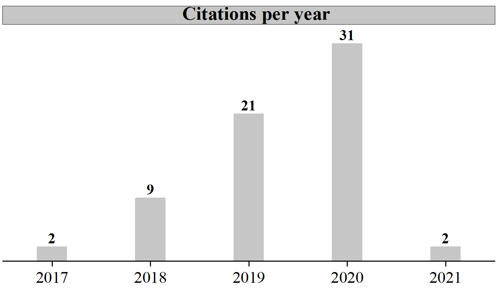

Group – Publications
Journal Papers
Summary
|  |
|
2021
Yongji Guan, Jiao Zhang, Jinyuan Wang, Fulong Yang, Huanwang Jing, Xiaoping Zhang*, Youquan Deng*: In-Depth Investigation on THz Spectrum of 1-Butyl-3-Methylimidazolium Dicyanamide Spreading on Graphene Surface by Computational Calculation. Journal of Molecular Liquids 05/2020; 311:113353., DOI:10.1016/j.molliq.2020.113353 (Times Cited: 0)
2020
Yongji Guan, Jiao Zhang, Jinyuan Wang, Fulong Yang, Huanwang Jing, Xiaoping Zhang*, Youquan Deng*: In-Depth Investigation on THz Spectrum of 1-Butyl-3-Methylimidazolium Dicyanamide Spreading on Graphene Surface by Computational Calculation. Journal of Molecular Liquids 05/2020; 311:113353., DOI:10.1016/j.molliq.2020.113353 (Times Cited: 0)
Jiao Zhang1, Yongji Guan1, Jinyuan Wang, Fulong Yang, Huanwang Jing, Xiaoping Zhang*, Youquan Deng*: Vibrational Spectrum of 1-Ethyl-3-Methylimidazolium Tetrafluoroborate on Graphene Surface. Journal of Molecular Liquids 05/2020; 311:113340., DOI:10.1016/j.molliq.2020.113340 (Times Cited: 2)
Wenqiong Chen, Yongji Guan, Jiao Zhang, Junjie Pei, Xiaoping Zhang*, Youquan Deng*: Atomistic Insight into Changes in the Vibrational Spectrum of Ionic Liquids under External Electric Field. Acta Physico-Chimica Sinica 03/2020; 36(X):1-11., DOI:10.3866/PKU.WHXB202001004 (Times Cited: 0)
2019
Jinyuan Wang, Yongji Guan, Xiaogang Yu, Youzhi Cao, Jiazang Chen, Yilin Wang, Bin Hu, Huanwang Jing*: Photoelectrocatalytic Reduction of CO2 to Paraffin Using p-n Heterojunctions. iScience 12/2019; 23(1):100768., DOI:10.1016/j.isci.2019.100768 (Times Cited: 10)
Chao Du, Yongji Guan, Shimin Liu, Wenpeng Ni, Junjie Pei, Wei Zhang, Xiaoping Zhang*, Youquan Deng*: Highly Efficient and Non-Precious Metal for the Li-SOCl2 Battery Using Nitrogen Doped Carbon Supported Cu Nanoparticles. Journal of The Electrochemical Society 03/2019; 166(4):A641-A648., DOI:10.1149/2.0701904jes (Times Cited: 1)
Fulong Yang, Jianhao Gong, E. Yang, Yongji Guan, Xiaodong He, Shimin Liu, Xiaoping Zhang*, Youquan Deng*: Ultrabroadband Metamaterial Absorbers Based on Ionic Liquids. Applied Physics A 02/2019; 125(2):149., DOI:10.1007/s00339-019-2443-x (Times Cited: 9)
Fulong Yang, Jiaohao Gong, E Yang, Yongji Guan, Xiaodong He, Shimin Liu, Xiaoping Zhang*, Youquan Deng*: Microwave-Absorbing Properties of Room-Temperature Ionic Liquids. Journal of Physics D Applied Physics 01/2019; 52(15):155302., DOI:10.1088/1361-6463/ab016c (Times Cited: 5)
Yongji Guan, Wenqiong Chen, Jiao Zhang, Fulong Yang, Chao Du, Xiaoping Zhang*, Youquan Deng*: Ionic Liquid Filled Single-Walled Carbon Nanotubes for Flow-Induced Energy Harvesting. The Journal of Physical Chemistry C 01/2019; 123 (12):6981-6988., DOI:10.1021/acs.jpcc.8b11142 (Times Cited: 1)
2018
Yongji Guan, Qunfeng Shao, Wenqiong Chen, Jiao Zhang, Youquan Deng*, Xiaoping Zhang*: Flow-Induced Voltage Generation by Driving Imidazolium-Based Ionic Liquids over a Graphene Nano-Channel. Journal of Materials Chemistry A 05/2018; 6(25):11941-11950., DOI:10.1039/C8TA02629G (Times Cited: 7)
Wenqiong Chen, Yongji Guan, Xiaoping Zhang*, Youquan Deng*: Influence of External Electric Field on Vibrational Spectrum of Imidazolium-Based Ionic Liquids Probed by Molecular Dynamics Simulation. Acta Physico-Chimica Sinica 04/2018; 34(8):1-9., DOI:10.3866/PKU.WHXB201801091 (Times Cited: 3)
2017
Yongji Guan, Qunfeng Shao, Wenqiong Chen, Shimin Liu, Xiaoping Zhang*, Youquan Deng*: Dynamic Three-Dimensional Nano-Wetting Behaviour of Imidazolium Based Ionic Liquids Probed by Molecular Dynamics Simulation. The Journal of Physical Chemistry C 09/2017; 121(42):23716-23726., DOI:10.1021/acs.jpcc.7b07474 (Times Cited: 21)
2016
Qunfeng Shao, Jingjing Jia, Yongji Guan, Xiaodong He, Xiaoping Zhang*: Flow-Induced Voltage Generation by Moving a Nano-Sized Ionic Liquids Droplet over a Graphene Sheet: Molecular Dynamics Simulation. The Journal of Chemical Physics 03/2016; 144(12):124703., DOI:10.1063/1.4944611 (Times Cited: 12)
Conference Proceedings
2018
Yongji Guan, Qunfeng Shao, Xiaoping Zhang*, Youquan Deng*: Flow-Induced Voltage Generation by Driving Imidazolium-Based Ionic Liquids over a Graphene Nano-Channel. The 6th Asian Pacific Congress on Ionic Liquid & Green Processes (APCIL-6), Tottori, Japan; 10/2018
2016
Yongji Guan, Qunfeng Shao, Xiaoping Zhang*: Probing Nano-Wettability of Hydrophilic/Hydrophobic Ionic Liquids Using Molecular Dynamics Simulation. The 8th International Conference on Molecular Simulations and Informatics Technology Application (8th-ICMS&I), Dalian, China; 09/2016
Zhiyun Li, Zhinan Wang, Pengfei Cao*, Yongji Guan, Lin Cheng, Linshan Chen: Near Infrared Plasmonic Optical Trapping Based on Hybrid Metal Nanorod. 2016 Progress in Electromagnetic Research Symposium (PIERS); 08/2016, DOI:10.1109/PIERS.2016.7734436 (Times Cited: 1)